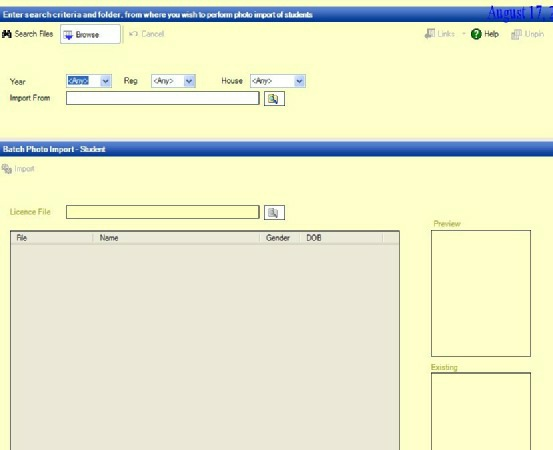
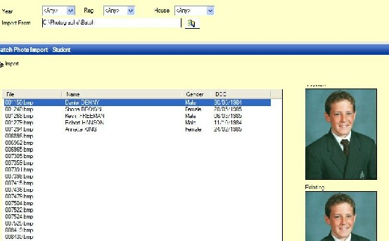
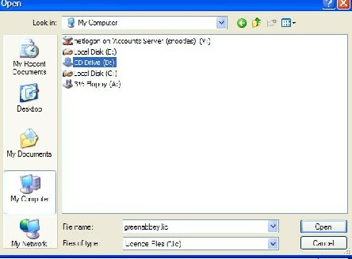
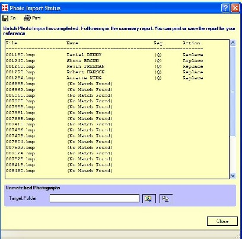
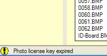

This guide explains how to import photos into SIMS.Net 7.15 (or above) using the Licensed Photographer route.
1. Select Routines | Student | Batch Import Photographs | By Admission Numbers to display the Batch Photo Import - Students page.
2. Optionally select the Year, Reg or House that you want to associate images with, from the respective drop-down lists.
3. Click the Select Files button next to the Import From field to display the Browse for Folder dialog, navigate to the location of the stored photographic images and click the OK button to save the specified path. Press the Search files button to show the images.
4. Click the Select Files button next to the Licence File field to display the Browse for Folder dialog, navigate to the location of the stored Licence File and click the Open button to deploy the Licence File.
5. Click the Import button to complete the process.
6. Any error messages associated with the license validity are displayed in the lower left of the screen.
